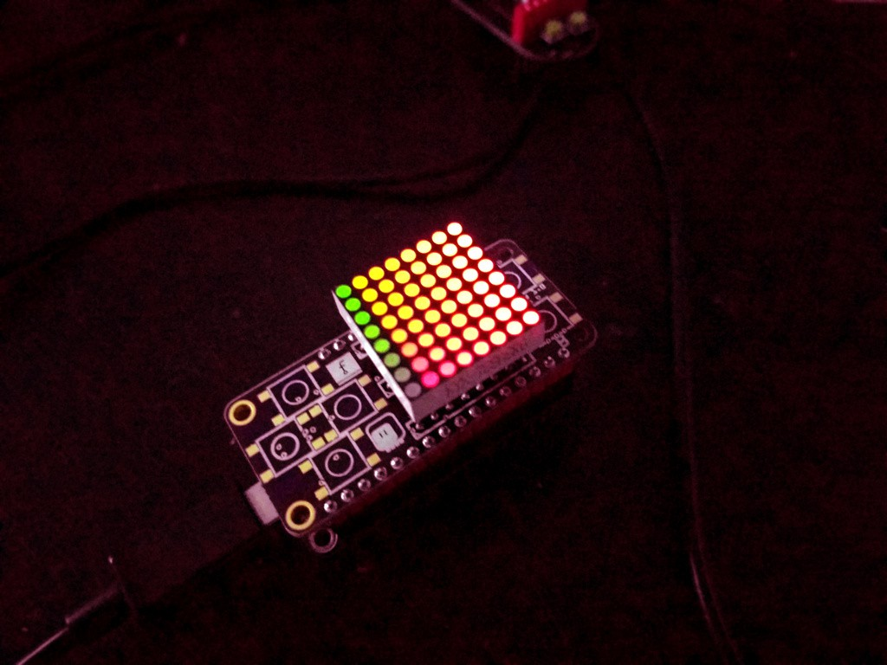

Bi-color 8x8 Matrix¶
Published on 2017-04-29 in D1 Mini Matrix Deluxe Shields.
After the IS31FL3728 chip, I tried its larger cousins, but I’m still struggling getting them to work. They are in 40- and 48-pin QFN packages, which are pretty hard to solder by hand (in fact, it might be impossible without a hot air gun and/or a reflow oven). But one of them, the IS31FL3733 also comes in a TQFP package, and I got one. This one is too big to fit on a D1 Mini shield, but I made something else:
(Note that the colors are smooth and perfectly fine in reality, but my phone camera can’t handle them.)
This project will have a page of its own soon, but for now it’s a good testing platform for my code. So I made another MicroPython library, available at https://bitbucket.org/thesheep/micropython-is31fl37x that can handle both IS31FL3733 (for up to 12x16 matrices) and IS31FL3736 (up to 8x12 matrices).
In the mean time, I’m going to work on those QFN chips, maybe I will manage to get them to work somehow. Maybe it’s just time for me to invest in a proper rework station?